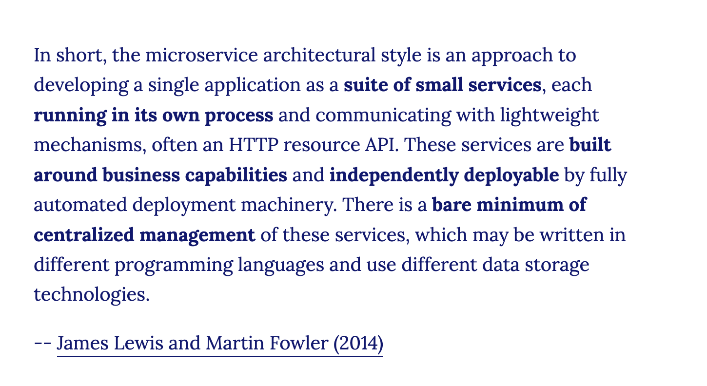

Todo: Lav en tutorial og video baseret på denne artikkel, men med Azure som host
How To Build and Deploy Microservices With Python
Building a Realistic Microservice Step-By-Step with Flask
flask-change-microservice
Video: What are Microservices?
Microservices (Martin Fowler)